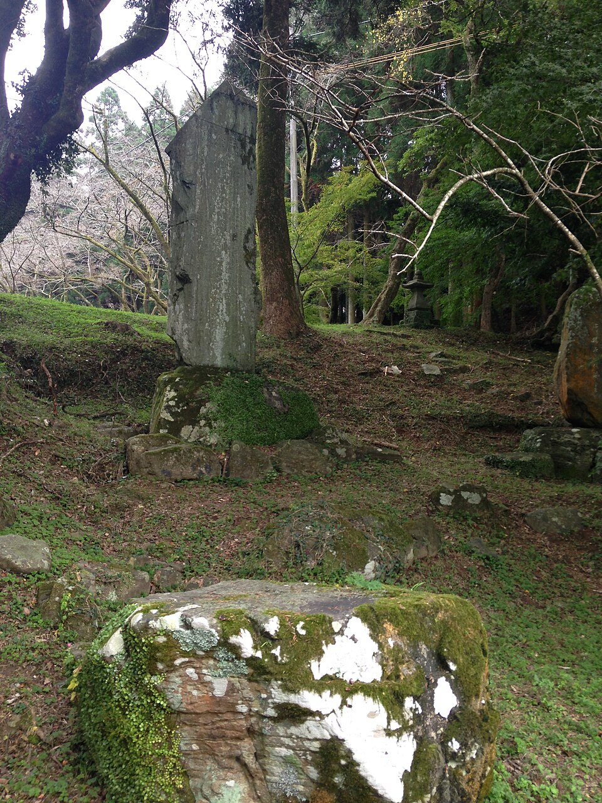

写真出典：Wikimedia Commons
福岡県指定史跡
四季の彩りに包まれる城下町の面影
秋月城跡は、朝倉市秋月に位置し、戦国時代から城下町として栄えた歴史ある史跡です。山に囲まれた閑静な街並みは「筑前の小京都」と称されています。
大手門であった「黒門」や長屋門が現存しており、春の桜や秋の紅葉の名所としても有名で、歴史散策と四季の風情を同時に楽しむことができます。
秋月城跡の主な見どころ
秋月城の黒門
元は大手門として建てられ、明治期に垂裕神社参道に移築された黒塗りの門。春の桜や秋の紅葉とのコントラストが絶景です。
杉の馬場通り
城跡へ続く約500mの馬場跡で、両脇には約200本の桜並木が続きます。お茶屋や土産物店が立ち並び、散策に最適です。
歴史ある城下町の町並み
重要伝統的建造物群保存地区に指定されており、石垣や武家屋敷が並ぶ風情ある町並みが今も大切に残されています。
施設情報
| 所在地 | 福岡県朝倉市秋月野鳥 |
|---|---|
| 見学時間 | 自由（散策無料） |
| 主な見どころ | 黒門 / 長屋門 / 杉の馬場 / 垂裕神社 |
| 見頃時期 | 桜：3月下旬～4月上旬 / 紅葉：11月中旬～11月下旬 |
| アクセス | 甘木鉄道「甘木駅」より甘木観光バス「秋月」行きで約20分、「郷土館前」下車徒歩約5分 |